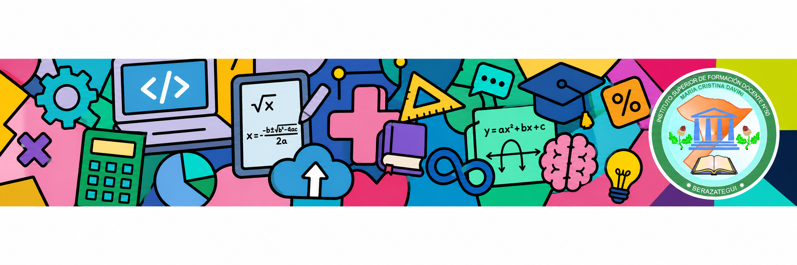

Fecha: jueves 14 de mayo de 2026 — Modalidad: Presencial
Para comenzar, retomamos lo trabajado la clase anterior. Como recordarán, la Narrativa digital que presentaron fue la pieza clave para acreditar su asistencia y, sobre todo, para visibilizar el "detrás de escena" de su investigación. Hoy utilizaremos esos insumos para el siguiente paso.
En esta clase el foco está en la coevaluación (evaluación entre pares). Es el momento de observar el trabajo de otros equipos para aprender de ellos y ofrecer una mirada constructiva.
¿Dónde trabajamos? En el foro "Socializando el Mural de Ciudadanía Digital".
Protocolo: Utilizaremos la Escalera de la retroalimentación. Un grupo observará el trabajo de otro y les hará devoluciones, mirando los criterios que hay en la rúbrica de evaluación del ABP.
Pueden descargar y leer el protocolo aquí:
📄 Protocolo de la escalera de la retroalimentación (PDF)🔗 Ver link directo al Genially
Antes de dar por finalizado su mural o de evaluar el de un compañero, verifiquen que contenga los siguientes elementos esenciales:
Recolección de datos propios:
En esta etapa, profundizaremos en distintos temas de la Tecnología Educativa.
Es momento de reorganizarse. Deben formar 5 grupos en total, registrándose en este documento:
📝 Documento de conformación de gruposCada grupo tendrá uno de los siguientes temas para investigar:
Recurso de apoyo: Para conocer de qué tratan y ver sitios sugeridos, consulten el archivo:
Material para investigar sobre EcTDurante lo que resta de la materia, cada equipo deberá cumplir con el siguiente trabajo:
Importante: La información sobre esta segunda etapa es para que ya conozcan los nuevos desafíos y temas. Por el momento, el foco principal del trabajo debe estar en finalizar y pulir el proyecto de Ciudadanía Digital y completar la coevaluación.